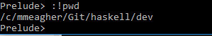

Getting Started with GHCi
Installing and using GHCi
Objectives
On completion of this lab you should:
have GHC complier and interpreter installed on your laptop.
be able to use the GHCi interpreter to test simple examples.
be able to run simple Haskell scripts using the GHCI interface.
Useful links
There are many great resources out there for Learning Haskell:
- This link is excellent - https://wiki.haskell.org/Learning_Haskell - it includes a list of textbooks, on-line tutorials etc.
The textbook for this course is 'Programming in Haskell', Graham Hutton, Cambridge University Press, ISBN ISBN 978-1316626221. See

Another useful text:
- Learn you a Haskell For Great Good - Available online for free.

- Learn you a Haskell For Great Good - Available online for free.
OnLine Courses:
- 'Functional Programming in Haskell' - University of Glagow, FutureLearn
- 'Functional Programming Principles in Scala' - Martin Odersky, Coursera. This is a very good course for the principles of Functional Programming. Good structured exercises and allows you time to define from first principles. (Wrong language, right course!)
- Loads of courses online!!
Installing GHC (Glasgow Haskell Compiler)
- I am assuming that you are installing GHC on your own laptop.
Downloading and installing GHC
GHC inludes a compiler and an interpreter (GHCi).
The environment can be downloaded from https://www.haskell.org/ghc/.
OS-specific packages can be easier to use - see https://www.haskell.org/ghc/distribution_packages.html

Install the package.
Run the interpreter (GHCi) by simply typing ghci from terminal or running the GHCi app.
Running simple Haskell programs
- We can execute small simple programs using GHCi (i for interactive) alone.
- To practice this, firstly run the GHCi interpreter (as per previous page). A prompt is displayed >
- Use GHCi to evaluate the following:
Exercise 1
2+3Exercise 2
2*3Exercise 3
div is the infix integer division operator (note the quotes character - backward quote)
7 `div` 2Exercise 4
Select the first element of a non-empty list:
head [1,2,3,4,5]Exercise 5
Remove the first elemenet of a non-empty list:
tail [1,2,3,4,5]Exercise 6
Select the first n elements of a list:
take 3 [1,2,3,4,5]Exercise 7
Remove the first n elements of a list:
drop 3 [1,2,3,4,5]Exercise 8
Select the nth element of a list (from index 0):
[1,2,3,4,5] !! 3Exercise 9
Calculate the length of a list:
length [1,2,3,4,5]Exercise 10
Calculate the sum of a list:
sum [1,2,3,4,5]Exercise 11
Calculate the product of a list:
product [1,2,3,4,5]Exercise 12
Append two lists:
[1,2,3,4,5] ++ [4,6,7,8]Exercise 13
Calculate the reverse of a list:
reverse [1,2,3,4,5]Exercise 14
Prepend an element to a list:
1: [2,3,4,5]Using GHC
- To load compiled code.
- Using the terminal, cd to your working directory. (this just makes the loading simpler)
- Create a simple Haskell script:
main = print (fac 20)
fac 0 = 1
fac n = n * fac (n-1)Call it, e.g. 'Main.hs'
-
This compiles it as well as loading it. You can now call the fac function:
You can also call the main function:
If you make any changes to the script, you need to reload it (thus recompiling it) :
A list of GHCi commands is available at https://downloads.haskell.org/~ghc/7.4.1/docs/html/users_guide/ghci-commands.html
When you need to use a terminal command, just use :! as in 
Naming Values Worksheet
- The purpose of this worksheet is for you to work through the worksheet.
- Copy and paste the code into a .hs script.
- Load this script into GHCi.
- Go through the code, section by section.
For example, for the first code snippet, replace the
pie = undefinedwith
pie = 3.1416At each stage, test your change by
- reloading script
- testing values : e.g. for first snippet, simply type
> pie
- You should expect to get back the new value of pie.
--- Naming Values worksheet
------------------------------------------------
-- pi is a real number which is approximately
-- three and 1,416 ten thousandths. Define a Double
-- with this approximate value.
pie:: Double -- Mis-spelling deliberate
pie = undefined
--------------------------------------------------
-- The formula for the area of a circle is
-- pie times r squared, where r is the radius of
-- the circle. Define a Double which is the area
-- in square centimeters of a circle with diameter
-- 10 centimeters.
areaCircleDiameter10:: Double
areaCircleDiameter10 = undefined
----------------------------------------------
-- Define an Integer that is the number of
-- seconds in a week.
secondsIn1Week:: Integer
secondsIn1Week = undefined
---------------------------------------------
-- Define a List of Integers with the elements
-- 1 to 10 in increasing order
oneToTen:: [Integer]
oneToTen = undefined
---------------------------------------------
-- Define a string that is your first name
yourFirstName:: String
yourFirstName = undefined
---------------------------------------------
-- Define an Integer that is your age
yourAge:: Integer
yourAge = undefined
---------------------------------------------
-- Define a Bool truthvalue that is
-- (yourAge is greater than 19) or (yourFirstName is "Tim")
compareName:: Bool
compareName = undefined
---------------------------------------------
-- Define an Double that is the average of
-- 3.0, 7.42, and 24.8
average:: Double
average = undefined
---------------------------------------------
-- Define an Integer that is the remainder
-- when 14563 is divided by 22. Hint use the
-- "mod" operator. Try it out to see how it works
remainder::Integer
remainder = undefined
---------------------------------------------
-- Define a tuple that has your first name
-- and your age.
tuple:: (String,Integer)
tuple = undefined
---------------------------------------------
-- Compute the difference between your
-- approximation of pie, and the fraction
-- 22 divided by 7.
difference:: Double
difference = undefined